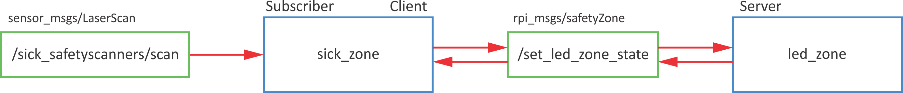

Custom messages
Topics messages: .msg
Service messages: .srv
Service message has two parts
Use of msg primitives to define custom messages.
MSG:
- std_msgs
- sensor_msgs
- geometry_msgs
- actionlib_msgs
- ...
SRV:
- std_srvs
- ...
MSG
We will create new topic message ledStatus composed of
rpi_msgs
and build it
Go to the package and create new folder msg:
Create new file ledStatus.msg
Open package.xml in rpi_msgs package
| package.xml | |
|---|---|
Open CMakeLists.txt in rpi_msgs package
| CMakeLists.txt | |
|---|---|
| CMakeLists.txt | |
|---|---|
| CMakeLists.txt | |
|---|---|
| CMakeLists.txt | |
|---|---|
After that do catkin_make
After the build is finish you can check if the message rpi_msgs/ledStatus is available
SRV
We will create new service message safetyZone.srv composed of
Go to the package rpi_msgs
srv:
Create new file safetyZone.srv
Open CMakeLists.txt in rpi_msgs package
| CMakeLists.txt | |
|---|---|
After that do the catkin_make
After the build is finish you can check if the service message rpi_msgs/safetyZone is available
Use of custom MSG and SRV
To use custom messages, you need to do some changes of the package.html and the CMakeLists.txt of the package where you want to use them (in our case rpi_feros)
| package.html | |
|---|---|
To include new message in python code add
DEBUG
rosmsg list- list of available messages-
rosmsg show <msg name>- show message details -
rossrv list- list of available service messages rossrv show <srv msg name>- show service message details
Exercise
Turn on LEDs regarding to distance \(d\) from safety sensor:
- green: \(d\) > 0.4 m
- yellow: 0.4 m > \(d\) > 0.2 m
- red: \(d\) < 0.2 m
